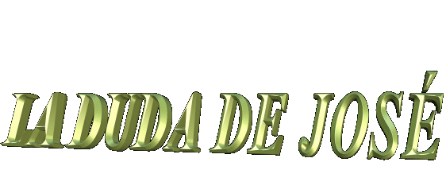
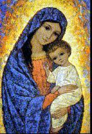
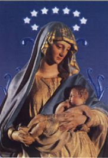
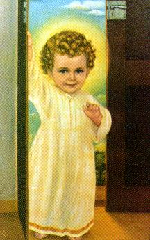

 - Con tres meses, el alumbramiento de MARIA
se haca visible. De manera que llegando a Nazar, sus padres,
parientes y amigos, se regocijaron con la novedad, porque aunque
todava era "novia", en el perodo llamado
"Conduccin", de acuerdo con la ley, la gravidez
era considerada legal.
- Con tres meses, el alumbramiento de MARIA
se haca visible. De manera que llegando a Nazar, sus padres,
parientes y amigos, se regocijaron con la novedad, porque aunque
todava era "novia", en el perodo llamado
"Conduccin", de acuerdo con la ley, la gravidez
era considerada legal.
Sin embargo, José
no entendía lo que estaba ocurriendo con su novia. Mismo con la
formacin 
MARIA, empero, a pesar de entender el drama de Jose, senta interiormente que no deba tomar la iniciativa de explicar el evento, porque en verdad el acontecimiento estaba en el dominio de DIOS y nadie mejor que L para encontrar el momento oportuno afin de justificarlo el ocurrido. Simplemente confi y esper.
"Pero sin entender y no encontrando explicaciones para la gravidez de su novia, José, su marido, como era justo y no Quera difamarla, se propuso dejarla secretamente". (Mt 1,19)
Mientras Él decidía, en sueo un Ángel del SEÑOR le dijo: "José, hijo de David, no temas recibir a María tu mujer, porque lo que ha sido engendrado en ella es del ESPÍRITU SANTO. Ella Dar a luz un hijo; y Llamars su nombre JESÚS, porque L Salvar a su pueblo de sus pecados." (Mt 1,20-21)
Todo pasí para que se cumpliese lo que el SEÑOR había dicho por el profeta: "Por tanto, el mismo SEÑOR os Dar la seal: He Aqu que la virgen Concebir y Dar a luz un hijo, y Llamar su nombre Emanuel". (Is 7,14)
José al despertar, actu como el Ángel había pedido, por consiguiente estaba tranquilo, había recuperado su equilibrio emocional y alejado la tentacin del diablo que puso la malicia en su pensamiento.

El MATRIMONIO DE MARIA
 - Logrando el Éltimo acto para el matrimonio
perfecto, en acuerdo con el santo objetivo de DIOS,
con mucha fiesta fue celebrada la Boda de José
y MARIA.
- Logrando el Éltimo acto para el matrimonio
perfecto, en acuerdo con el santo objetivo de DIOS,
con mucha fiesta fue celebrada la Boda de José
y MARIA.
Por ese tiempo el Matrimonio se constitua de tres partes: Esponsales (se era el Compromiso), Conduccin (perodo intermediario) y la Boda o el Matrimonio propiamente dicho.
En el Esponsales era hecho el Contrato de Matrimonio que podra escribirse o hacerse oral. En ambos casos, ante la presencia de testigos, se combinaba lo que la novia recibira como obsequio.
Entre el Esponsales (Compromiso) y la Celebracin de la Boda o Nupcias, pasaba un intervalo de tiempo que podra llegar a doce meses. Este perodo se llamaba "Conduccin". En Él, la pareja comprometida viva separada, pero ellos podían usar los derechos del matrimonio, porque el Contrato de Matrimonio les concedía propiedad en el sentido estricto, y que, si ellos consiguieran tener niños en este perodo, la descendencia era considerada legtima.
En el día de la Celebracin de la Boda, el marido caminaba a la tarde, con vestuario de gala y acompaado de amigos y másicos hacia la casa de la novia. Se constitua entonces el sóquito, una muestra de gran pompa y alegra. Mientras los grupos de vrgenes bailaban y entonaban versos, trayendo una guirnalda de flores en una de las manos y una làmpara encendida en la otra, cmbalos, tambores y flautas, rugiendo ruidosamente, invitaban a las personas a participar de la misma felicidad. El climax de Matrimonio era el banquete. Los maridos apenas entraban en su casa, empezaba el Banquete Matrimonial que generalmente duraba una semana, y siempre era oportunidad de mucha confraternizacin entre los participantes.
Con toda seguridad, del mismo modo, así también se realiz el Matrimonio de José y MARIA.

El NACIMIENTO DE JESÚS
 - Israel por ese tiempo estaba ocupado por el
podero militar de Roma. Csar Augustus, Emperador romano,
decret dando rdenes para hacer un censo en todos los
territorios ocupados. En la tierra de los judáos el censo fue
cumplido bajo la orientacin del Gobernador de Siria, Péblio
Suplàcio Cyrinus, el cual determinaba que todas las personas
estaban obligadas al registro en el
- Israel por ese tiempo estaba ocupado por el
podero militar de Roma. Csar Augustus, Emperador romano,
decret dando rdenes para hacer un censo en todos los
territorios ocupados. En la tierra de los judáos el censo fue
cumplido bajo la orientacin del Gobernador de Siria, Péblio
Suplàcio Cyrinus, el cual determinaba que todas las personas
estaban obligadas al registro en el
José que había nacido en Belàn, viajá para allé con la esposa, para cumplir un deber cvico y en asistencia al orden decretada por el poder romano, aunque MARIA ya se encontraba en el final de su alumbramiento.
Por esa razón el viaje no fue en caravana, ellos deben haber usado atajos y los caminos secundarios, afin de evitar la carretera principal. Debe haber sido una viaje calmo y muy lento, sólo el casal usando asnos mansos, con varias paradas y descansando por las noches en lugares solitarios para no despertar atencin.
Así, con paciencia y todas las dificultades de la ruta, superaron la distancia más peligrosa y repleta de riesgos, entre Nazar y Jerusalàn, y pronto ellos siguieron para Belàn, distante sólo 8 kilàmetros.
Como no existan hoteles, el alojamiento se haca en la casa de parientes y amigos, en chozas, en grutas o en el "Khan" (Perro Palestinense). Era un tipo de albergue que serva de abrigo a las caravanas y los viajeros, allé ellos se protegan de bandidos y ladrones. Su construccin era de piedras y cemento y tena el formato rectangular, con paredes muy altas y una nica puerta, en cima de las paredes existian dos o tres lugares para centinelas, donde quedaban guardias vigilantes armados.
Dentro del "Khan", prjimo las paredes, existia una cubierta de lona sobre un tejado de madera en media-agua, donde las personas eran protegidas. Los animales y las cargas quedavan en el campo, o sea, ocupando la parte central del "Khan".
José y MARIA encontraron Belàn movimentada, porque eran los Éltimos días del censo, por sta razón, no encontraron ningn lugar para quedarse satisfactorio, a pesar de ellos haber pasado por las casas de los parientes y amigos. En el "Khan" de la ciudad con certeza tenia lugar, porque de hecho en esos resguardos siempre tiene espacio para más uno... Sin embargo, no era aconsejable, porque allé durman, coman, beban, oraban, discutan, negociaban, luchaban, nacan y muran, todas las personas que allé estaban, de todos los niveles y hbitos, amontonados en el medio de los animales, o debajo del tejado de lona. MARIA y José no se quedaran en ese lugar y permitir nacer al NIO-DIOS, en el medio de tanta confusin, bajo las miradas curiosas de la muchedumbre aglomerada. Ellos prefirieron una gruta distante que a veces que serva como establo. En su silencio y abandono, representaba un lugar más digno y respetuoso.
En el local, José con sus herramientas, prepar un resguado apropriado y MARÍA, después de descansar, ayudá com la limpieza.
"Aconteci que, mientras ellos estaban Allà, se cumplieron los Dáas de su alumbramiento, y dio a luz a su hijo primognito. Le Envolvi en paales, y le Acost en un pesebre, porque no Haba lugar para ellos en el Albergue". (Lc 2,6-7).
Só, porque en el "Khan" era un lugar mucho péblico para nacer el HIJO DE DIOS.
De esta manera, se hizo realidad más una profeca sobre el nacimiento de JESUS, EL CRISTO SALVADOR: "Y el Verbo se hizo carne y Habit entre nosotros, y contemplamos su gloria, como la gloria del unignito del PADRE, lleno de gracia y de verdad". (Jo 1,14)
Terminado ese movimiento de personas, debido al censo, la Sagrada Familia se mudá a una pequea casa donde pasí a vivir.